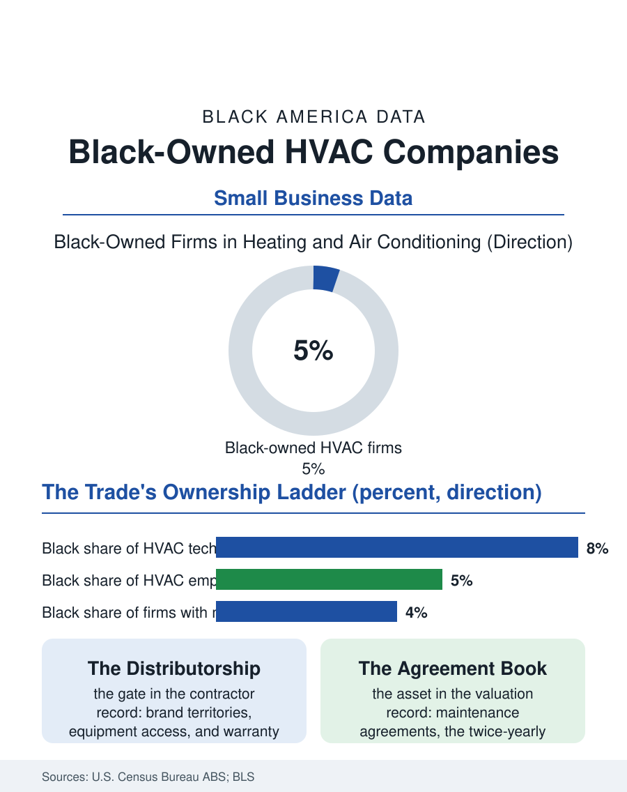

Black Business
Owning the Weather: Black-Owned HVAC Companies
HVAC ownership rides on distributorships, trade credit, and maintenance contracts, and Black firms hold a small share of all three. The HVAC file.

The heating and cooling contractor who answers a no-heat call at midnight in January works in one of the most defensible trades in the economy: licensed, essential, recurring, and impossible to offshore. The industry's ownership, though, concentrates in family firms passed between generations, and Black-owned HVAC companies hold a small single-digit share of the sector's employer businesses in the Census Bureau's counts. This article reads the HVAC file, where the license, the distributorship, and the service contract decide who owns the work.
An Industry Built on Replacement Cycles
The economics begin with the installed base. Every furnace and air conditioner in America is aging toward replacement on a ten-to-twenty-year clock, generating a demand stream that continues through recessions because heat is not discretionary. The industry organizes around that clock through manufacturer distributorships: dealers carry brands, brands set territories and training requirements, and the dealer's relationship with the distributor governs access to equipment, warranty work, and co-op advertising. Black-owned firms in the contractor surveys describe the distributorship as the industry's quiet gate, historically granted through relationships that mirrored the trade's demographics, though the major manufacturers have in recent years run explicit dealer-development programs in several metros. Beneath the dealer tier, the service economy runs on maintenance agreements, the twice-yearly tune-up contracts that smooth a firm's calendar and convert one-time calls into annuity relationships. Firm valuations in the trade press track the agreement count more than any other number, which is why the private equity rollups now consolidating the industry price shops on recurring revenue, and why the ownership stakes being consolidated are so rarely Black-held: the equity being purchased accumulated in firms founded when distributorships and bank credit were allocated by the old rules.
Technicians, Licenses, and the Family Succession
The workforce pipeline repeats the trades pattern documented across this atlas: EPA certification for refrigerant work, state contractor licensing, manufacturer training, and years of service-truck experience before a technician can run a route alone. Black HVAC technicians hold a modest share of the workforce, and the firms they later found are disproportionately started from the service side, by senior technicians whose customer relationships walk out the door with them, the classic trades succession except that it must happen without the family shop, the inherited distributorship, or the father's line of credit at the supply house. The supply relationship deserves its line, because HVAC runs on trade credit: parts and equipment are bought on account and paid after the customer's check clears, so a young firm's growth rate is set by its supply-house credit limit, a number assigned by local judgment in an industry where judgment has a demographic history. The counterweights in the record are the minority contractor associations' group purchasing, manufacturer programs that extend starter credit lines to development dealers, and the commercial segment, where institutional maintenance contracts pay on schedule and reward documented reliability over relationships, letting a firm build the credit history the supply house respects.
Consolidation and the Remaining Door
The industry's present chapter is consolidation. Private equity platforms have bought hundreds of local HVAC, plumbing, and electrical firms, professionalizing marketing, dispatch, and pricing, and raising the competitive bar for the independent shop. For Black owners the rollup wave cuts in two directions: it offers exits at strong multiples to the generation that built firms against the old odds, thinning Black ownership further, and it leaves gaps, the mid-size neighborhoods and service niches the platforms underweight, where new Black firms with digital marketing and review-platform fluency have been entering at rates the industry surveys are beginning to notice. Training is the other moving part: the technician shortage is chronic, community college HVAC programs report waiting lists, and several of the country's strongest programs sit in Black Belt community colleges whose graduates feed both the platforms and the independent shops. The HVAC file closes on the trade's own durable logic. The installed base keeps aging, the climate keeps warming, the license keeps the work local and credentialed, and the ownership question reduces to the three assets the file keeps naming: the distributorship, the credit line, and the maintenance agreement book. Whoever assembles those three owns a piece of the weather itself, and the current decade's programs and platforms are deciding the assembly.
More in Black Business
Black-Owned Businesses: Counts, Receipts, and the Representation Gap
About 161,000 Black-owned employer firms and three million solo ventures: how the Census Bureau counts Black business ownership, where firms concentrate, and the gap between population share and business share.
Black Median Net Worth: The Wealth Gap in Federal Reserve Data
The Federal Reserve puts Black median family net worth at $44,900, against $285,000 for White families — about 16 cents on the dollar. The widest gap in economic data.
Black Buying Power: The $1.8 Trillion Consumer Economy
Black buying power is estimated at about $1.8 trillion — larger than the economy of most nations. What the figure measures, who produces it, and what it buys.
Source: U.S. Census Bureau, Annual Business Survey (NAICS 23822); Bureau of Labor Statistics workforce data; HVAC industry consolidation reporting.